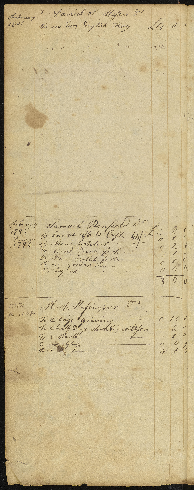
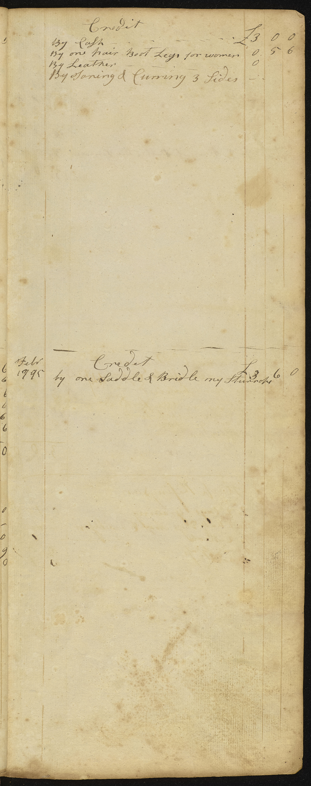

1801 - 1819 Merchant and Shipping
Account Log Book from Fairfield, Connecticut
Authored by Thomas Bartram
Table of Contents

Account of Materials for Building
-
2000 feet
boards at 19 Dollars
11 8
0
-
900 feet boards at 15 dollars
- - -
4 0 0
- Joiners Bill Framing
& Covering Barn 9 18 0
-
Frame for Barn
15 0 0
- - -
- Cake for
Raising 0 13
0
- - -
- 8 Pound fourpenny
Nails for Shop 0 8 8
- - -
-
6 Pound fourpenny Hens for Shop
- - -
0 6 0
-
2 Hundred oak
Boards for Shop
- - -
0 4 0
-
2 Thousand
Shingles
- - -
2 0 0
-
Frame for
House
- - -
0 4 0
-
Frame for
Shop
- - -
3 6 0
-
Bought of
Daniel Gregory &
Shouland Brick at 5 Dollars Thousand & paid him Forty Dollars
February 10 1802
12 0
0
-
6 pound
Hens
- - -
0 6 0
-
one Thousand
Shingles for Shop 0 18 0
-
half Thousand
Shingles for Shop
- - -
0 9 0
-
one & half pound
[MISSING TEXT]
- - -
0 1 3
-
Five
hundred
9
feet Boards - - -
2 5 0
-
5 2/1 Thousand 3 feet
Shingles
- - -
27 0 0
-
6 thousand 2 feet at
- - -
3
Dollars
14 8 0
-
Nails
- - -
7 10 0
- glass - 25 dollars - - -
7 10
0
- Carting brick - - -
4 0 0
- Joiners & Mason bills 48 0 0
- Paid [MISSING TEXT]
Nails &Glass
- - -
1 1 0/
-
[MISSING TEXT]
Nails
[MISSING TEXT]
6 0 0
- Stone - - -
12 0
0
-
[MISSING TEXT] Stone - - -
8 0
0
- 15 Hundred feed Boards - - -
7 0
0
- Making Fence & Nailes 4 0 0
- paints & [MISSING TEXT]
15 0
0
-
[MISSING TEXT] Stones &
[MISSING TEXT]
2 10
0
- Drying [MISSING TEXT]
- - -
5 0
0
- floor Boards 6
-
Nails for floor & inside work
3 0
0
- hinges for Doors - - -
1 10 --
-
[MISSING TEXT] Boards of Short
Shingles [MISSING TEXT]
- 2 thousand
Brick
- - -
10 10
- Boarding [MISSING TEXT]
& [MISSING TEXT] bill
30 0
0
[MISSING TEXT]
Urier Buckley
*
- To
- - -6 1/2 of flax
- - - at 1
-
To
6 3/4 of flax
-
To
9 of flax
[MISSING TEXT] October 1801
Nathaniel Burr
*
[MISSING TEXT]
-
Mary
Squire
5 wool to hay of Bartram
- woolsold July 18 1809
- T Bartram
- - - 41 1/4 - - -
2/9 Paid
- [MISSING TEXT]
Squire
- - - 6 6 - - -
2/9
- Hanna Burr
- - - 30- - -
2/9 Paid
- Eben Bartram 26 3/4 No hay 600
- John Wheeler
- - - 10 - - -No hay
120
- Job Bartram 8 2/1 paid
420
- Joseph Sturges
- - - 4 2/ paid 818
- Andrew Wakemen 3 - - - paid - - -
30
- Andrew MaClery 10 - - - paid 700
- Eathan Shearwood 6 2/- - - paid
- David Judson
- - - 18 /- - -
No> hay
- 3 No hay
- Joseph Sturges and others 65
1/4 paid
- Joseph Perry 20 2/4
paid
- M Risley
- - - 4 No> hay paid
- Will Thorp - - - 6
No hay
- David Hubble
- - -
- Will Thorp - - - 2
- - -
- Capt allen
- - - 5 1/4 paid
- David Bradley- - -19 paid
- Bradley Bulkley- - -18 paid
October 1801 Credit
- By [MISSING TEXT] Cart with
my help
October 1801
- By Shewing one yoak oxen by iron & help
December 1801
July 1809
- 1685 Cash- - -
[MISSING TEXT]
222 Dollars
cash
[MISSING TEXT] gave Seth Perry
1907 to go to N york to buy cargo

John Wheeler
*
April 10 1801
-
To
Five albany Boards
1/3 Board
0 6 3
-
To
Six pound Butter at
1/1
- - -
0 6 3
-
To
Four [MISSING TEXT] qrt Butter at 1/
- - -
0 4 3
November 161801
-
one cow at 20
Dollars
- - -
6 0 0
April 1802
-
ToFix Plow Plates - - -
0 0 6
-
To interest on Twenty Dollars 4 2/4 Month 0 2 6
-
To
Sharpen
- - -
0 1 0
-
To Plow 2 Days - - -
-
To Cash 4 Dollars - - -
1 4 0
Nov 1802
- To Mend [MISSING TEXT]
- - -
0 1
6
April 6, 1802
- Due on Due bill when Settled April 6,
1802
2 1 9
-
To Thousand Lath - - -
0 9 0
June 1 1803
- To 1 Day Raking Hay 0 5 0
August 1803
- Balance Books January 9 1804
£
5:3:6
February 20 1804
John Wheeler
*
-
To
one on Shedd new
- - -
£
1 0 0
-
To
2 Pigs
- - -
0 12 0
-
To Hay 4 1/4 [MISSING TEXT] Hundred at 4/6 0 19 2
July 10 1805
-
To 12 Pounds & [MISSING TEXT] Veal 0 4 6
-
To 6 4 pound pork [MISSING TEXT]
- - -
0 5
5
January 1806
-
To Make Knife Cut Straw 0 1 0
-
ToSet 2 Shews by Isiah
Jennings
1
0
February 6 1806
-
To Mend Slay irons & fix hook - - -
0 0 9
February 19 1806
-
To Strap & Ring and ring my iron on the apple tree
0 2
0
July 28 1806
-
To Set one Shoe - - -
0 0 6
Dec 1806
-
To Shewing one yoak oxen - - -
0 10 0
-
To one pair hinges - - -
0 4 0
-
To Mind [MISSING TEXT]
0 1 6
Decem 181806
-
To Shewing horse all round Steel Toes & New Shews my
Steel 0 0
6
-
To 3 [MISSING TEXT] Dutch oven - - -
0 0 9
January 15 1807
-
To
[MISSING TEXT] iron on [MISSING TEXT]
0 3
0
-
Toone new hook for
Mill 0 2
0
-
Toset two shoes
[MISSING TEXT]
0 1 6
Decem 8 1807
- Shewing one yoak oxen 4 shews new
- - -
[MISSING TEXT]
-
ToMend Staple & new tree my iron 0 3 0
- this account is passed further over
Credit
July 1801
- By one Bush Rye - - -
- By Carting one load wood
- By veal 1/9 to horse to Newfield
- By Carting Brick - - -
4 0
0
- By Cash & other Materials 1 3 9
-
Balance Books 5
3 9
Credit
- By 3 Cattle team to Ozias Burr Sawmill Drove Them my self 0 3 9
- By 1 [MISSING TEXT] Cider
0 3
0
- By 2 Barrels Cider - - -
0 12 0
April 14 1805
- By 3 Cattle Team in woods 0 5 0
- By 4 quarts hay seed - - -
0 4 0
16
- By half bushel
Lime
0 2 0
- ByFlour
0 3 0
- By 30 Pounts of
Bran
0 2 3
- By Half Bushel
Corn
0 3 0
- By Straw 24
bundles
0 3 0
- - -
January 1806
- By horse to Mill Miaken
- - -
- By 2 Bushel
Corn
- - -
0 9 0
- By Carting one Load wood - - -
0 7 0
- By haul to Mill [MISSING TEXT]
- - -
Dec
- by Carting one Load wood - - -
0 8 0
-
[MISSING TEXT] work at ox frame
- - -
0 4 6

Daniel S Mefser
*
February 3 1801
-
To one ton English Hay 4 0 0
Samuel Penfield
*
-
ToLay ax 4/6 to Calf 44/ 2 8 6
Decem 1796
-
ToMend hatchet - - -
0 1
6
-
ToMend Dung fork - - -
0 2
6
-
ToMend pitch fork - - -
0 1
6
-
Toone garden hoe - - -
0 1
6
-
ToLay ax - - -
0 4
6

Credit
-
To Cash - - -
9 0 0
-
To one pair Boot Legs for women 0 5 6
-
To Taning & Curring 3
Hides
0
Credit
Feb 1795
- by one Saddle & Bridle my Sturrups> 3 6 0
Barlow Sturges *
April 1801
- To 6 [MISSING TEXT] at /7
0 3
6
- To half Bushel Potatoes
- To 3 Load Timber 0 13 2
- To 37 Nailes 0
11 8
- To 20
0 6
0
- To use of Saw
May 1 1803
- To 4 [MISSING TEXT] the Summer
3 0
0
Credit
March 19 1802
april 21 1802
- by Cash 1 0 0
- by Cash 10 0 1
Credit
Novemb 1801
- by one half day make cart [MISSING TEXT]
0 4 0
- by Making narrow & [MISSING TEXT] cart 0 6 0
- by 2 Days [MISSING TEXT]
0 8 0
January 1802
- by one Day Covering Ship 0 4 0
January 1803
- by Carting Load wood 0 7 6

Daniel Osborn *
June 1800
- To iron Complete
1 1
- To 4 Bush Seed wheat at 12/ 2 3
- To 20 of Flax at /8 0 13
- To Set a Shoe
0 2
February 1802
- To 10 3/4 of Flax at 1/ Per Pound
0 10
- To 9 of Flax at 1/ 0 9
- To 5 Dollars Paid Smith Stone Cutter 1 10
Caleb Brewster *
May 2 1801
- To one Bush Flax Seed 1 10
- To of Hay 0 3
- To 10 of
0 2
- To [MISSING TEXT] Lot 3 0
Sept 1801
- To one [MISSING TEXT] the
Codfish 1 13
- To Cart one Load wood from your woods 0 9
Decem 26 1801
- To Carting Dung one Day
0 10
- To [MISSING TEXT] on Bucket
0 0
- To freight on appletrees Paid Capt Thorp
0 15
- To 2 Shews New St Toes & Corks my Steel
3 06
- To Mend buckle - - -
0 0
- To fix needle rings bolt for Slay
0 1
- To Pig weighing 19 1/2 poinds at /6
0 6
- To Shewed new Steel Toes Corks
0 3 0
- To toe [MISSING TEXT] old ones Set them - - -
0 2 0
- To 2 irons To hand flax Mill on
- To Mend Carriage - - -
- To New hook & [MISSING TEXT] Links Charge my iron
0 2
- To Shewing horse my Steel
0 2
- To one old [MISSING TEXT] my [MISSING TEXT]
0 1
- To Mend [MISSING TEXT] To Carriage my iron
0 4
- This account [MISSING TEXT] her oven
Credit
- by 900 feet Boards at 91
4 0 0
- by 580 feet Boarts at 91
2 11 9
- by one old [MISSING TEXT]
&
[MISSING TEXT]
&
[MISSING TEXT]
0 30 6
- by horse to Plow & hay
- - -
0 30 6
- By Cash